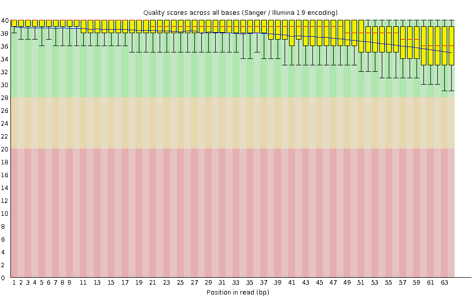
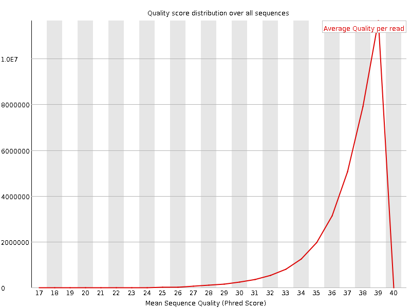
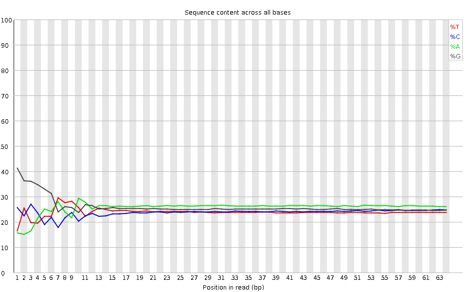
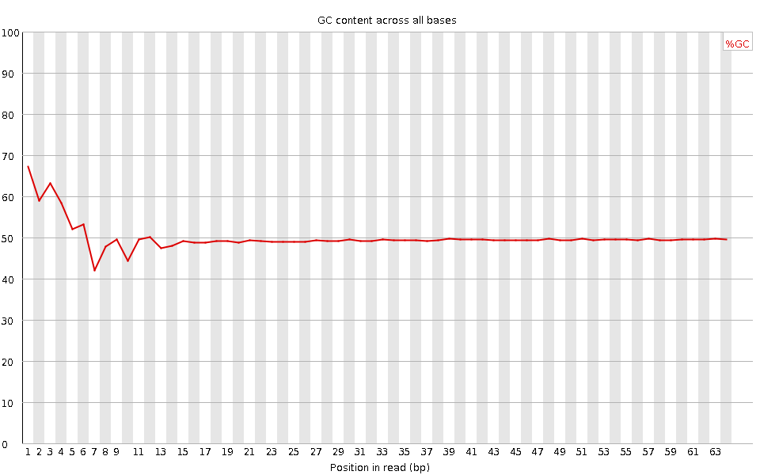
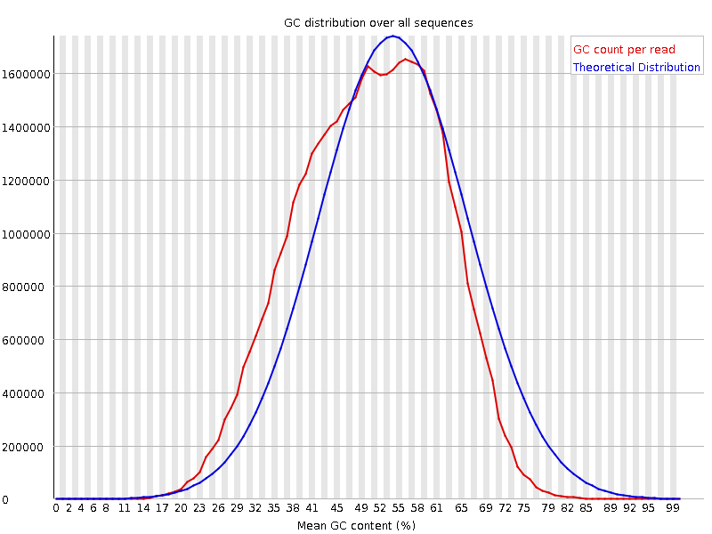
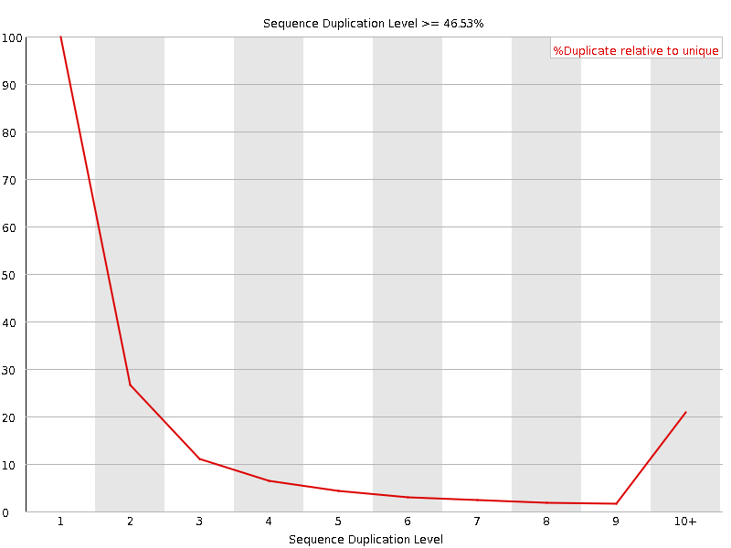
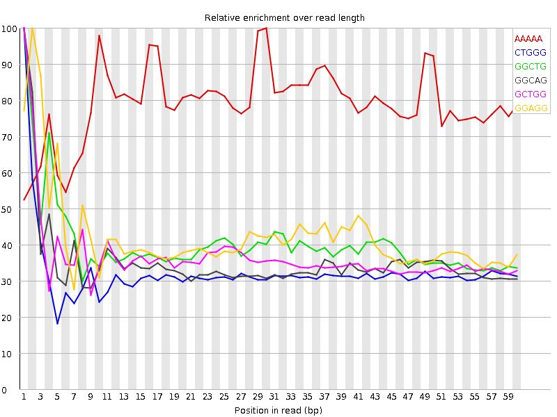

![[OK]](Icons/tick.png) Basic Statistics
Basic Statistics
| Measure | Value |
|---|---|
| Filename | SRR315298_pe_1.f.fastq |
| File type | Conventional base calls |
| Encoding | Sanger / Illumina 1.9 |
| Total Sequences | 33489542 |
| Filtered Sequences | 0 |
| Sequence length | 64 |
| %GC | 50 |
Per base sequence quality

Per sequence quality scores

![[FAIL]](Icons/error.png) Per base sequence content
Per base sequence content

Per base GC content

![[WARN]](Icons/warning.png) Per sequence GC content
Per sequence GC content

Per base N content

Sequence Length Distribution

Sequence Duplication Levels

Overrepresented sequences
No overrepresented sequences
Kmer Content

| Sequence | Count | Obs/Exp Overall | Obs/Exp Max | Max Obs/Exp Position |
|---|---|---|---|---|
| AAAAA | 7282375 | 3.1517165 | 3.981553 | 30 |
| CTGGG | 5174010 | 2.485518 | 7.6877017 | 1 |
| GGCTG | 4876685 | 2.3426874 | 5.82544 | 1 |
| GGCAG | 5117960 | 2.2863007 | 6.4926896 | 1 |
| GCTGG | 4759160 | 2.28623 | 6.2152724 | 1 |
| GGAGG | 5597230 | 2.2822511 | 5.4048843 | 2 |
| GGGAG | 4983970 | 2.0321965 | 6.5664725 | 1 |
| TGGGG | 4353590 | 1.9089342 | 6.593152 | 1 |
| GGGCA | 3983500 | 1.7795135 | 5.7108383 | 1 |
| GTGGG | 3760235 | 1.6487638 | 8.64271 | 1 |
| GGGGA | 3995225 | 1.629039 | 8.885001 | 1 |
| GGGTG | 3682505 | 1.6146812 | 5.68025 | 2 |
| GGGCT | 3239085 | 1.5560086 | 5.1550145 | 3 |
| GGGGG | 3801125 | 1.5269731 | 9.282656 | 1 |
| GGGGC | 3406435 | 1.4992207 | 5.8118854 | 2 |
| GGGGT | 3251145 | 1.4255412 | 7.0069833 | 1 |
| GTGGA | 2718560 | 1.2099109 | 5.011551 | 1 |
| CGGGG | 1922220 | 0.84599656 | 7.2284822 | 1 |